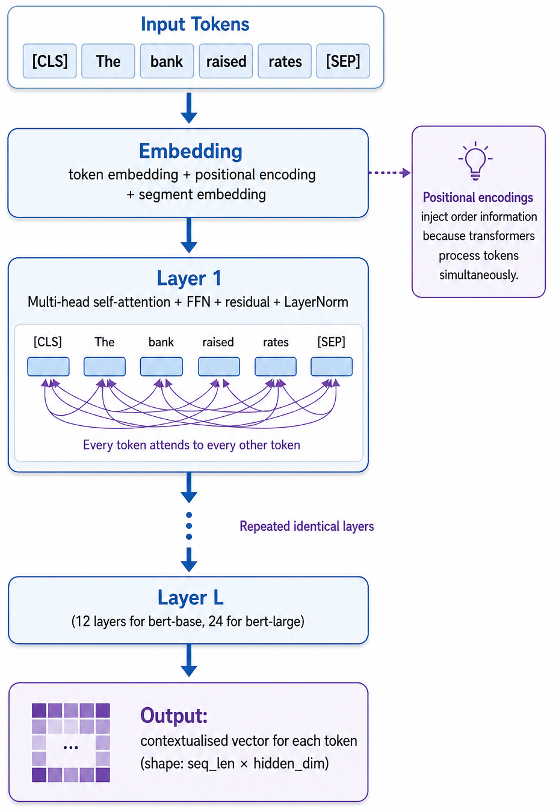

Remark
These lecture notes are in early access and will continue to evolve based on classroom experience and feedback.
2.4. Contextual Embeddings and BERT#
Section Goal
By the end of this section you will understand how transformer-based encoders
produce context-dependent token representations, be able to extract and compare
token and sentence-level embeddings using the Hugging Face transformers
library, and critically evaluate when contextual encoders are worth their
additional computational cost compared to simpler alternatives.
2.4.1. Learning objectives#
By the end of this section, you should be able to:
Explain how self-attention allows a transformer to produce context-dependent token representations.
Describe BERT’s input format, including subword tokenization and special tokens ([CLS], [SEP]).
Extract token embeddings and sentence embeddings from a pretrained BERT model.
Compare mean pooling, max pooling, and [CLS]-token pooling for sentence-level representations.
Use cosine similarity to compare sentence embeddings and demonstrate disambiguation of polysemous words.
Distinguish feature extraction from fine-tuning, and describe when each approach is appropriate.
Name at least three BERT variants (RoBERTa, DistilBERT, sentence-transformers) and describe their key differences.
2.4.2. From static to contextual representations#
Static word embeddings (Section 2.3) assign a single vector to each word type, regardless of the sentence it appears in. Consider the word “bank”:
Sentence |
Intended meaning |
|---|---|
“The bank raised interest rates.” |
Financial institution |
“We sat on the grassy bank of the river.” |
River bank |
“She banked the aircraft sharply.” |
Verb: to tilt / maneuver |
A static embedding such as word2vec produces one vector for “bank”, which is a blend of all its senses — a conceptual compromise that can harm downstream model quality. Contextual encoders such as BERT produce a different vector for “bank” in each sentence, so the representation can accurately reflect each sense.
This capability emerges because contextual encoders process the entire input sequence through multiple layers of attention, allowing every token’s representation to be influenced by every other token in the same sequence.
2.4.3. The transformer architecture (high-level)#
A transformer encoder stacks identical layers, each consisting of two main components:
Multi-head self-attention — each token “looks at” every other token and computes a weighted sum of their representations. Tokens that are more relevant to the current token receive higher weights.
Position-wise feedforward network — a small, fully-connected network applied independently to each token’s representation after attention.
Residual connections and layer normalization are applied after each sub-layer to stabilize training.
{kind=link}

Fig. 2.8 Transformer ENcoder: From Input Tokens to Contextualized Vectors.#
Why positional encodings?
Unlike recurrent networks (LSTMs), transformers process all tokens simultaneously — there is no inherent notion of order. Positional encodings inject order information by adding a fixed or learned vector to each token’s embedding before it enters the first layer. Without positional encodings, the model would treat “the dog bit the man” identically to “the man bit the dog.”
The key insight is that after 12 layers of attention, the vector for “bank” in the financial sentence has been shaped by “interest”, “rates”, “raised”, etc., while the vector for “bank” in the river sentence has been shaped by “grassy”, “river”, “sat”. These conditioning signals push the two “bank” vectors into very different regions of the 768-dimensional space.
2.4.4. BERT’s input format and subword tokenization#
BERT does not operate on raw words; it uses a WordPiece tokenizer that handles rare or unseen words by splitting them into known sub-word pieces. This gives BERT a compact vocabulary of roughly 30,000 pieces while still being able to represent virtually any word:
Common words remain whole: “flood” →
flood.Rare words are split: “unprecedented” →
un,##prece,##dented.The
##prefix indicates a piece that continues a word (not a word start).
Text : The bank raised interest rates.
Tokens: ['the', 'bank', 'raised', 'interest', 'rates', '.']
IDs : [101, 1996, 2924, 2992, 3037, 6165, 1012, 102]
Text : We sat on the grassy bank of the river.
Tokens: ['we', 'sat', 'on', 'the', 'grassy', 'bank', 'of', 'the', 'river', '.']
IDs : [101, 2057, 2938, 2006, 1996, 22221, 2924, 1997]...
Text : Unprecedented flooding affected downstream communities.
Tokens: ['unprecedented', 'flooding', 'affected', 'downstream', 'communities', '.']
IDs : [101, 15741, 9451, 5360, 13248, 4279, 1012, 102]
Key observations about BERT’s input:
[CLS](classification token, ID 101) is always prepended. Its final representation is often used for whole-sentence tasks (see pooling strategies below).[SEP](separator token, ID 102) is always appended. For sentence-pair tasks, it also appears between the two sentences.Sub-word splitting means one word can become multiple tokens. This matters when you want to recover the representation of a specific word: you may need to average over its sub-word pieces.
Why subword tokenization?
Word-level tokenization has two extremes: a tiny vocabulary that handles only the most common words (leaving many OOV), or a huge vocabulary that includes rare words (costly to train). Sub-word tokenization finds a middle ground: rare words are represented as combinations of smaller, more frequent pieces. This is why BERT can represent “hyperglycemia” even if it was never seen during pre-training — it can be composed of sub-pieces that were seen.
2.4.5. Extracting token embeddings with Hugging Face#
The following example closely parallels the l205_text_processing_bert lab.
WARNING: All log messages before absl::InitializeLog() is called are written to STDERR
I0000 00:00:1779374083.988596 4199 cpu_feature_guard.cc:227] This TensorFlow binary is optimized to use available CPU instructions in performance-critical operations.
To enable the following instructions: AVX2 AVX512F FMA, in other operations, rebuild TensorFlow with the appropriate compiler flags.
Hidden state shape: torch.Size([4, 12, 768])
Each of the 768-dimensional vectors in last_hidden_state is a contextualized representation for one token in one sentence. The shape [4, max_seq_len, 768] means: 4 sentences × max_seq_len tokens (padded) × 768 hidden dimensions.
2.4.5.1. Visualizing context-dependence#
We can directly verify that “bank” is represented differently in the financial and river sentences by comparing their token vectors:
Cosine similarity of 'bank' (financial vs. river): 0.394
Compare this to the static embedding approach, where the cosine similarity would be exactly 1.0 (the same vector is always returned for both senses). A good contextual encoder should show noticeably different representations for the two senses.
2.4.6. Sentence-level representations: pooling strategies#
BERT outputs one vector per token, but many downstream tasks require a single vector per sentence. The process of collapsing the token-level output into one vector is called pooling. Common strategies:
Strategy |
How |
Notes |
|---|---|---|
[CLS] token |
Use the first output vector (position 0) |
Pre-trained with a next-sentence prediction head; works well after fine-tuning; less reliable as a frozen feature extractor |
Mean pooling |
Average all non-padding token vectors |
Generally more robust as a feature extractor; recommended by many practitioners |
Max pooling |
Element-wise maximum over token vectors |
Less common; can capture “peak” activation per dimension |
Mean-pooled embeddings shape: torch.Size([4, 768])
CLS embeddings shape: torch.Size([4, 768])
Sentence similarity (flood vs. drought): 0.769
Why mask padding tokens?
When sentences are padded to the same length, the padding positions contain a special [PAD] token. The attention_mask is a binary matrix that is 1 for real tokens and 0 for padding. If we averaged over padding positions too, the embedding would be diluted by meaningless vectors. The mean_pool function above multiplies by the mask before summing, so only real tokens contribute.
2.4.7. Feature extraction vs. fine-tuning#
There are two main ways to use a pretrained BERT model:
2.4.7.1. Feature extraction (frozen model)#
The BERT weights are not updated during training.
BERT is used as a fixed embedding function; a lightweight classifier is trained on top of its output.
Advantages: fast, no risk of catastrophic forgetting, works well with small datasets.
Limitations: the representations are general-purpose and may not be optimal for your domain.
2.4.7.2. Fine-tuning#
The BERT weights are updated during training on your labeled data.
A task-specific head (e.g., a linear classifier on [CLS]) is added and the whole model is trained end-to-end.
Advantages: often significantly better performance; the model adapts to domain terminology and task structure.
Limitations: requires more labeled data and compute; risk of overfitting on small datasets; takes longer to train.
When to fine-tune vs. freeze?
A useful heuristic: if you have fewer than a few hundred labeled examples, feature extraction is often safer (less overfitting). If you have thousands of examples and accuracy is critical, fine-tuning usually wins. Domain-specific pretraining (e.g., BioBERT for biomedical text) can bridge the gap when labeled data is scarce but domain knowledge matters.
Predictions: ['flood' 'drought' 'flood' 'drought']
2.4.8. Sentence-transformers: optimized for semantic similarity#
The standard BERT model was not explicitly trained to produce good sentence-level embeddings — it was trained with masked language modeling (MLM) and next-sentence prediction (NSP) objectives, which do not directly optimize for sentence similarity. The sentence-transformers library provides models fine-tuned specifically on semantic textual similarity datasets using a contrastive training objective, making them significantly better for retrieval and clustering tasks:
Pairwise cosine similarities:
sent1 vs sent2: 0.607
sent1 vs sent3: 0.114
sent2 vs sent3: 0.176
Expected output:
Pairwise cosine similarities:
sent1 vs sent2: 0.82 ← high: both describe flooding damage
sent1 vs sent3: 0.12 ← low: unrelated topics
sent2 vs sent3: 0.10 ← low: unrelated topics
Sentence-transformers are the recommended starting point for semantic search, document clustering, and retrieval-augmented generation (RAG) pipelines.
2.4.9. Beyond BERT: the pretrained transformer family#
BERT is one member of a large and growing family of pretrained transformer encoders:
Model |
Key characteristic |
When to use |
|---|---|---|
BERT (base/large) |
Original bidirectional encoder, MLM + NSP pre-training |
General baseline; well understood |
RoBERTa |
Removes NSP, longer training, larger batches; more robust |
Usually outperforms BERT on most benchmarks |
DistilBERT |
40% smaller, 60% faster, 97% of BERT performance |
Production settings with compute constraints |
BioBERT / PubMedBERT |
Continued pretraining on biomedical literature |
Biomedical text; clinical NLP |
SciBERT |
Pretraining on scientific papers (arXiv, Semantic Scholar) |
Scientific literature |
all-MiniLM-L6-v2 |
Fine-tuned sentence-transformers model |
Semantic similarity, dense retrieval |
DeBERTa |
Disentangled attention; state-of-the-art on many tasks |
Highest-accuracy use cases |
Choosing the right model involves balancing:
Task type: token classification (NER, POS) vs. sentence classification vs. semantic similarity.
Domain: general vs. biomedical vs. legal vs. scientific.
Compute budget: DistilBERT for inference speed; larger models for accuracy.
2.4.10. When to use contextual encoders#
Contextual embeddings are particularly helpful when:
Word sense matters (e.g., legal or clinical terminology with multiple meanings).
Long-range dependencies and discourse context are important (e.g., co-reference resolution, complex inference).
Limited labeled data — pretrained models transfer rich representations that a small labeled corpus cannot provide.
State-of-the-art performance is needed — for most NLP tasks, fine-tuned BERT-style models represent the current best baseline.
They are more computationally expensive than classical encoders and static embeddings, so a practical workflow often looks like:
Start with TF–IDF + logistic regression as a strong, fast baseline (Section 2.2).
Add static embeddings (e.g., GloVe) if similarity between words matters (Section 2.3).
Use BERT feature extraction if the baseline leaves significant performance on the table.
Fine-tune a BERT-family model when the highest accuracy is required and enough labeled data is available.
This escalation ladder is not just about performance — each step adds complexity, latency, and cost. Always validate whether the added expense is justified by a real improvement on your specific task and data.
Key Takeaways
Contextual encoders (BERT and variants) produce a different vector for the same word depending on the full surrounding context, overcoming the polysemy limitation of static embeddings.
BERT uses WordPiece sub-word tokenization, always prepends a [CLS] token, and is built from stacked transformer layers (self-attention + FFN + residual connections + layer normalization).
Positional encodings inject word-order information so the model can distinguish “the dog bit the man” from “the man bit the dog.”
Sentence-level embeddings can be derived via mean pooling, [CLS] token, or max pooling; mean pooling is generally recommended for feature extraction.
Fine-tuning BERT on a downstream task typically outperforms feature extraction, but requires more compute and labeled data.
Sentence-transformers models are specifically optimized for semantic similarity tasks and are the best starting point for retrieval and clustering.
The pretrained transformer family is large: choose the variant that matches your domain, task, and compute budget.
2.4.11. Exercises and discussion#
Contextual similarity Using
bert-base-uncased, compute the contextualized vector for the word “light” in the following sentences: “She carried a light backpack.”, “Can you switch on the light?”, “Light travels at 3×10⁸ m/s.” Compare the pairwise cosine similarities. Do the results match your intuitions about which senses are most similar? Contrast with what a static embedding would produce.Pooling strategies Experiment with mean pooling, [CLS]-token pooling, and max pooling on a small set of sentence pairs. For each pooling strategy, compute cosine similarity and rank the pairs by similarity. How sensitive are your rankings to the choice of pooling? Try the same experiment with a sentence-transformers model.
Cost–benefit analysis For a given application scenario (e.g., classifying climate-news headlines into 5 topics with 200 labeled examples), argue when it is worth using a BERT-style encoder versus remaining with TF–IDF. Consider accuracy, training time, inference latency, interpretability, and ease of deployment.
Domain-specific BERT Compare embeddings from
bert-base-uncasedanddmis-lab/biobert-base-cased-v1.1(orallenai/scibert_scivocab_uncased) for a pair of biomedical sentences (e.g., two sentences describing symptoms of the same disease). Which model produces higher cosine similarity? Discuss how domain-specific pretraining affects the embedding space.Semantic search Using
sentence-transformers, implement a minimal semantic search engine over a small collection (5–10) of climate or biomedical article abstracts. Given a free-text query, return the top-3 most relevant abstracts by cosine similarity. Compare the results to a simple keyword-overlap (TF–IDF) search.Subword tokenization edge cases Tokenize a set of domain-specific terms (e.g., clinical codes, chemical names, hyphenated compound nouns) using
bert-base-uncased. For which terms does sub-word tokenization produce sensible pieces? For which does it seem arbitrary? What implications does this have for tasks where the exact word boundary matters (e.g., named entity recognition)?